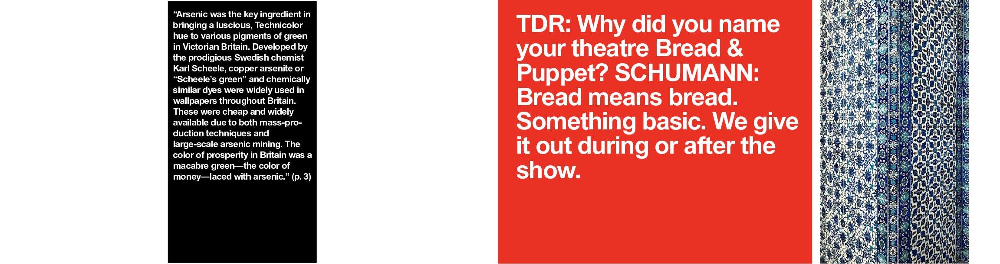

I think ‘action’ in photography is something to do with that sense of freshness: the photo shoot for My Husband in particular felt new and fresh to me
“Art is a value in itself, creates space and food for thought. And this freedom - apart from economic usability and marketing - is urgently needed.”
“Green
Papaya is [...] is a halfway
house for ideas, a space to hang out
and have real conversations again, a
chance to cook and share meals. It is less
about art than it is about being artists and
being human again—and questioning what that
means in our current context."